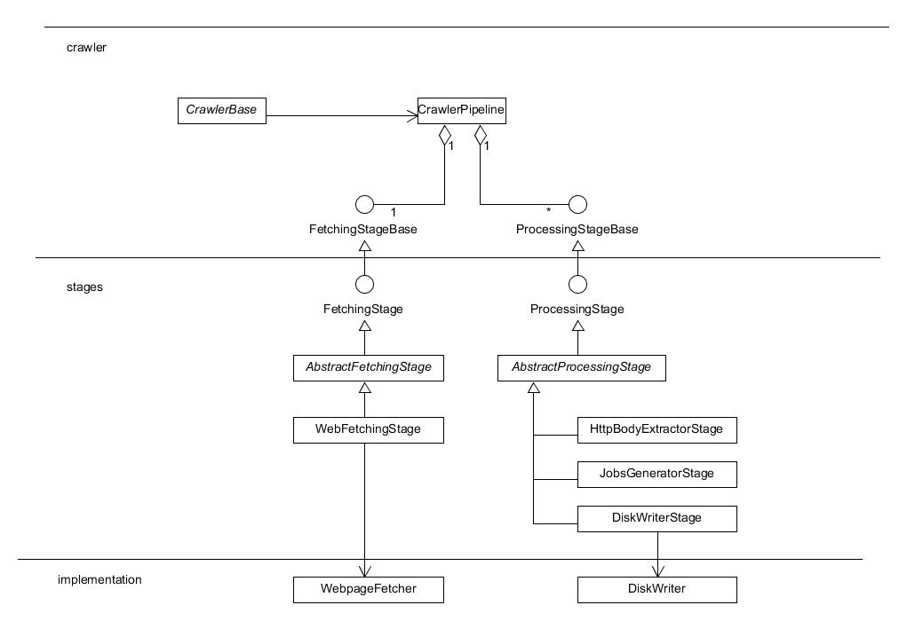

System structure
This document describes the system structure of the web-crawler.
Approach
A strict layered architecture, ie no bypassing of neighbouring layers is allowed.
Implementation
- Top-layer: Contains the core framework with crawler, pipeline, jobs.
- Middle-layer: Consists of the stages of the pipeline which implement the framework using the bottom-layer.
- Bottom-layer: Implementation classes which are agnostic of the framework.
System design
The layers of the web-crawler are shown below:

Layers of the web-crawler.